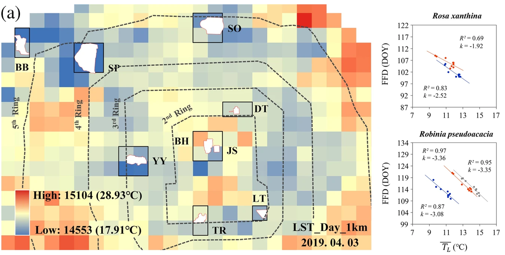
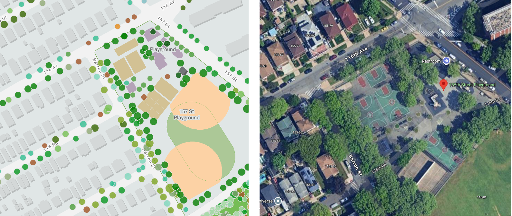

Phenology, the timing of periodic plant life cycle events, is sensitive to biotic and abiotic environment.
Spatial unevenness of urban thermal environment might lead to the spatial heterogeneity of phenology.
Negative correlation between the flowering date and the monthly mean LST in February–April.
Figure 1: Katz et al., 2019
A significant spatial variation for First flowing date of 35 species, which negatively correlated withdaily LST.

Figure 2: Xing et al., 2022
Require phenology records and climate information within city:
As for phenology, we need broader data collection to capture a more comprehensive picture of vegetation and further enable city-to-city comparisons.
Medium-resolution satellite data might fail to capture the fine-scale variations in tree phenology within the heterogeneous urban landscapes.
Genus / Species information is lost in remote sensing data
As for urban micro-climate.
Land surface temperature could not accurately represent tree growing environment.
Decoupling between urban microclimates and surrounding free-air conditions.
Question and Hypothesis
Question: What is the spatial heterogeneity of individual tree phenology from the same genus within a city, and across cities located in different climate regions?
Hypothesis: The heterogeneous urban landscape amplifies the variation of individual phenology within cities.
Goal: Insights into how vegetation adapts to altered environmental conditions under urbanization and predict future pathways under global warming.
1 Raw data
1.1 Read and clean the WU data (based on GHCNd)
The urban microclimate information comes from the Weather Underground program. There are 4 raw daily variables selected, i.e. AvgTemp, HighTemp, LowTemp and Precipitation_sum (Sum_mm). I flagged the records which are unknown or questionable according to the methods applied by Global Historical Climatology Network daily GHCNd.
For initial analysis, I collect the date from 4 cities, i.e. New York, Houston, Detroit, and Seattle.
Code
# No. of WU sitesdata <-data.frame(Category =c("DV", "NY", "ST", "HT"),Number_of_Sites =c(226, 148, 367, 171))ggplot(data, aes(x = Category, y = Number_of_Sites)) +geom_bar(stat ="identity", fill ="steelblue") +geom_text(aes(label = Number_of_Sites), vjust =-0.5, size =4) +labs(x ="Category", y ="Number of Sites") +theme(legend.position ="right",axis.title.x =element_text(size =18),axis.title.y =element_text(size =18),title =element_text(size =20)) +theme_minimal()
Figure 3: Number of WU sites in each city
1.2 Shortwave data from Daymet
To control for the influence of other variables on phenology, I also incorporated shortwave radiation data derived from the Daymet daily dataset with a 1 km resolution. Shortwave radiation was extracted for the specific locations of the trees.
Code
# downloadcity ="NY"data_dir <-paste0("~/phenology-urban/data/raw/", city, "/Daymet/daily2016-2024/")file <-list.files(data_dir, pattern ="srad_daily_2023_ncss\\.nc$", full.names =TRUE)srad_nc <- terra::rast(file)srad_df <-as.data.frame(srad_nc[[1]], xy =TRUE)ggplot(srad_df, aes(x = x, y = y, fill = srad_1)) +geom_raster() +scale_fill_viridis_c(name ="W/m²") +labs(title ="Shortwave Radiation (W/m²) - 2023-01-01", x ="x", y ="y") +theme_minimal()
Figure 4: The shortwave radiation raster in 2023-01-01, NY
1.3 Select the street tree base on WU data
I used the street tree in the above 4 cities, with the phenology records established by Yiluan. These trees are part of the whole inventory, covering 14 genera and being sampled. I select the trees which are within 500 m buffer around the Weather Underground sites (see Figure 5).
The tree locations points were overlapped with Planetscope imageries to extract the reflectance values. After smoothing and regression, we could get the EVI curve. The phenological metrics were calculated based on the EVI curve:

Figure 6: Extract reflectance from PlanetScope based on tree location, an example in NY
Figure 7: Phenology metrics calculated based on EVI curve from PlanetScope
Spring phenology
SOS: Defined as the day of year when individual tree growing season EVI curves first cross the green-up 50% threshold.
Green-up Pace: Defined as the time span (in days) required for the individual tree growing season EVI curves to transition from the green-up 20% threshold to the 80% threshold.
Fall phenology
EOS: Defined as the day of year when individual tree growing season EVI curves first cross the green-down 50% threshold.
Green-down Pace: Defined as the time span (in days) required for the individual tree growing season EVI curves to transition from the green-down 20% threshold to the 80% threshold.
2.2 Optimal preseason length calculated by Tempavg
Defined as the period (5-180 days, with 5-day steps) before phenological event for which the partial correlation coefficient between mean phenological event date and average temperature was highest, controlling other climate variables. Meng et al., 2020, Yin et al., 2024
Figure 8: Conceptual diagram for optimal preseason
Figure 9 displays the distribution of optimal preseason length and partial correlation coefficient calculated by Tempavg for SOS, Greenup pace, EOS and Greenup pace, respectively.
Optimal preseason length for spring phenology varies among genera. As for SOS, all genera have negetive partial correlation coefficients, which means the higher preseason average temperature, the earlier start of season. As for Greenup pace, most genera (except Carya, Celtis) have negetive partial correlation coefficients, which means the higher preseason average temperature, the faster green up pace. The preseason length varies significantly among genera.
Both the optimal preseason length for fall phenology and the response direction vary significantly among genera. As for EOS, most genera (except Populus, Platanus) have positive partial correlation coefficients, which means the higher preseason average temperature, the later end of season. As for Greenup pace, there is variation in impact direction among genera. The preseason length also varies significantly among genera.
Code
tavg_allyear_pcorr <-readRDS(paste0("~/phenology-urban/data/proc/urban/",city,"/tavg_allyear_pcorr.rds")) %>%mutate(# Create a flag for optimal_pre_lengthis_optimal =ifelse(pre_length_candidate == optimal_pre_length, TRUE, FALSE),# Create a flag for significant pvalueis_significant =ifelse(pvalue_trend <0.05, TRUE, FALSE),# Adjust transparencyalpha =ifelse(is_optimal, 1, 0.2),shape =ifelse(is_significant, 21, 1),size =ifelse(is_optimal, 4, 1.2) ) %>%mutate(shape =factor(shape, levels =c(21, 1)),size =factor(size, levels =c(1.2, 4)))# Create the plotsos_p <-ggplot((tavg_allyear_pcorr %>%filter(type =="SOS")), aes(x = pre_length_candidate, y = pre_length_trend, color = genus, fill = genus, group = genus)) +geom_line(aes(alpha =0.1)) +# Add lines for trendsgeom_point(aes(alpha = alpha, shape = shape, size = size)) +# Add points with alpha and fillgeom_hline(yintercept =0, linetype ="dashed", color ="red", alpha =0.5) +scale_alpha_identity() +# Use the alpha values directlyscale_shape_manual(name ="Significance", values =c(21, 1),labels =c("p <= 0.05", "p > 0.05") ) +scale_size_manual(name ="Pre-season length", values =c(1.2, 4), labels =c("Others", "Optimal preseason length") ) +guides(shape =guide_legend(override.aes =list(fill =c("black", NA),color ="black")))+labs(title ="Start of season",x ="Pre-season length",y ="Partial correlation coefficient" ) +theme_minimal() +theme(legend.position ="right",axis.title.x =element_text(size =14), axis.title.y =element_text(size =14),title =element_text(size =14))greenup_p <-ggplot((tavg_allyear_pcorr %>%filter(type =="green-up pace")), aes(x = pre_length_candidate, y = pre_length_trend, color = genus, fill = genus, group = genus)) +geom_line(aes(alpha =0.1)) +# Add lines for trendsgeom_point(aes(alpha = alpha, size = size, shape = shape)) +# Add points with alpha and fillgeom_hline(yintercept =0, linetype ="dashed", color ="red", alpha =0.5) +scale_alpha_identity() +# Use the alpha values directlyscale_shape_manual(name ="Significance", values =c(21, 1),labels =c("p <= 0.05", "p > 0.05") ) +scale_size_manual(name ="Pre-season length", values =c(1.2, 4), labels =c("Others", "Optimal preseason length") ) +guides(shape =guide_legend(override.aes =list(fill =c("black", NA),color ="black")))+labs(title ="Green-up pace",x ="Pre-season length",y ="Partial correlation coefficient" ) +theme_minimal() +theme(legend.position ="right",axis.title.x =element_text(size =14), axis.title.y =element_text(size =14),title =element_text(size =14))eos_p <-ggplot((tavg_allyear_pcorr %>%filter(type =="EOS")), aes(x = pre_length_candidate, y = pre_length_trend, color = genus, fill = genus, group = genus)) +geom_line(aes(alpha =0.1)) +# Add lines for trendsgeom_point(aes(alpha = alpha, size = size, shape = shape)) +# Add points with alpha and fillgeom_hline(yintercept =0, linetype ="dashed", color ="red", alpha =0.5) +scale_alpha_identity() +# Use the alpha values directlyscale_shape_manual(name ="Significance", values =c(21, 1),labels =c("p <= 0.05", "p > 0.05") ) +scale_size_manual(name ="Pre-season length", values =c(1.2, 4), labels =c("Others", "Optimal preseason length") ) +guides(shape =guide_legend(override.aes =list(fill =c("black", NA),color ="black")))+labs(title ="End of season",x ="Pre-season length",y ="Partial correlation coefficient" ) +theme_minimal() +theme(legend.position ="right",axis.title.x =element_text(size =14), axis.title.y =element_text(size =14),title =element_text(size =14))greendown_p <-ggplot((tavg_allyear_pcorr %>%filter(type =="green-down pace")), aes(x = pre_length_candidate, y = pre_length_trend, color = genus, fill = genus, group = genus)) +geom_line(aes(alpha =0.1)) +# Add lines for trendsgeom_point(aes(alpha = alpha, size = size, shape = shape)) +# Add points with alpha and fillgeom_hline(yintercept =0, linetype ="dashed", color ="red", alpha =0.5) +scale_alpha_identity() +# Use the alpha values directlyscale_shape_manual(name ="Significance", values =c(21, 1),labels =c("p <= 0.05", "p > 0.05") ) +scale_size_manual(name ="Pre-season length", values =c(1.2, 4), labels =c("Others", "Optimal preseason length") ) +guides(shape =guide_legend(override.aes =list(fill =c("black", NA),color ="black")))+labs(title ="Green-down pace",x ="Pre-season length",y ="Partial correlation coefficient" ) +theme_minimal() +theme(legend.position ="right",axis.title.x =element_text(size =14), axis.title.y =element_text(size =14),title =element_text(size =14))sos_p + greenup_p +plot_layout(guides ="collect") &theme(legend.position ="right")eos_p + greendown_p +plot_layout(guides ="collect") &theme(legend.position ="right")
(a) Spring phenology
(b) Fall phenology
Figure 9: Distribution of partial correlation coefficient and preseason length, calculated by Tempavg
2.3 Brief summary of the data
So far, we have collected the phenology records and preseason climate information. The overall data variation is shown as below:
The variation range of phenology (e.g., SOS) and preseason temperature (AvgTemp) in different cities
2.4 Spatial model
I modeled the relationship between the phenology and environmental covariates using a spatial hierarchical model. The response variable (phenology parameter) at location \(\mathbf{s}_i\) and in year \(\mathbf{t}\), denoted as \(y(\mathbf{s}_i, \mathbf{t})\), was modeled as following model:
\(\mathbf{X}_{\mathbf{s}_i,\mathbf{t}} = [1, \text{AvgTemp}_{\mathbf{s}_i,\mathbf{t}}, \text{Precp}_{\mathbf{s}_i,\mathbf{t}}, \text{srad}_{\mathbf{s}_i,\mathbf{t}}]\) is the design matrix of predictors.
\(\boldsymbol{\beta} = [\beta_0, \beta_1, \beta_2, \beta_3]\) are the regression coefficients for the intercept and covariates.
\(\beta_1\) is the coefficient for the average temperature, which is the main interest in this study.
Spatially Correlated Random Effect: \[w(\mathbf{s}_i) \sim \text{MVN}(\mathbf{0}, \mathbf{R})\]
\(\mathbf{R}\) is the spatial correlation matrix defined by a covariance function.
In MCMC, I chose the optimal covariance function based on the variogram fitting:
In INLA, a spatial process with a Matérn covariance can be obtained as the weak solution to a stochastic partial differential equation (SPDE). The SPDE method uses the Finite Element Method (FEM) to approximate a spatial Gaussian Random Field (GRF). It constructs a triangulated mesh, where each node serves as a basis for interpolation. Basis functions are defined to be 1 at a node and decay to 0 at neighboring triangles, ensuring local influence. By discretizing the SPDE, the problem transforms into a sparse Gaussian Markov Random Field (GMRF), making computations more efficient for large spatial datasets.
Year-specific Random Effect: \[u(\mathbf{t}) \sim \text{N}(0, \tau^2_{\mathbf{t}})\]
\(u_{\mathbf{t}}\) captures year-to-year variability, with \(\tau^2_{\mathbf{t}}\) being the variance of the year effect.
\(\epsilon(\mathbf{s}_i, \mathbf{t})\) accounts for measurement error or small-scale variability.
Get the posterior distribution of model parameters:
MCMC: In NIMBLE package, the MCMC algorithm was used to sample from the posterior distribution of the model parameters.
INLA: In INLA package, the Integrated Nested Laplace Approximation (INLA) was used to approximate the posterior distribution of the model parameters. Rather than estimating the joint posterior distribution of the parameters via MCMC, INLA focusing on individual posterior marginals of the model parameters, which is enough to make inference of the model parameters and latent effects in most cases.
Most genera showed negative association between temperature and the start of season, suggesting the warmer preseason, the earilier start of season. Only Fraxinus had a positive association, with a median coefficient of 0.15. There are significant genus-level differences in how temperature influences the spring phenology.
Figure 10: The density of the posterior distribution of regression coefficients for Temp~avg~ with SOS as the response variable for each genus in New York city, generated via MCMC.
As for the spatial field, only Salix seems to be ideal. Other genera exhibit either uniform spatial effects or noticeable local variations, even extremely high value.
#################### Prepare the mesh and spde ####################### Build the mesh coord <-cbind(tavg_allyear_var$lon, tavg_allyear_var$lat) # coordinates of observationsdomain <-inla.nonconvex.hull(as.matrix(coord),concave =-.07,convex =-0.05, resolution=c(100,100))mesh <-inla.mesh.2d(boundary = domain, loc = coord,max.edge =c(10000, 20000), cutoff =1000# prevent close points from being connected)# mesh$n# ggplot() +# geom_sf(data=ny_boundary,color='turquoise',fill='transparent') +# gg(mesh) +# geom_sf(data=tavg_allyear_var_sf,col='purple',size=1.7,alpha=0.5)### Build the spde spde <-inla.spde2.matern(mesh = mesh, alpha =2, constr =TRUE)A.phe <-inla.spde.make.A(mesh = mesh, loc = coord)s.index <-inla.spde.make.index(name ="spatial.field",n.spde = spde$n.spde)# dim(A.phe)coorp <-cbind(prediction$Lon, prediction$Lat) A.phe.p <-inla.spde.make.A(mesh = mesh, loc = coorp)#################### Stack the data ####################stk.e <-inla.stack(tag ="est",data =list(y = tavg_allyear_var[[phe_metric]]),A =list(1, A.phe),effects =list(data.frame(Intercept =rep(1, nrow(coord)),AvgTemp_mean = tavg_allyear_var$AvgTemp_mean,Sum_mm_sum = tavg_allyear_var$Sum_mm_sum,srad_mean = tavg_allyear_var$srad_mean,year = tavg_allyear_var$year), s = s.index))stk.p <-inla.stack(tag ="pred",data =list(y =NA),A =list(1, A.phe.p),effects =list(data.frame(Intercept =rep(1, nrow(coorp)),AvgTemp_mean = prediction$AvgTemp_mean,Sum_mm_sum = prediction$Sum_mm_sum,srad_mean = prediction$srad_mean,year = prediction$year), s = s.index))# stk.full has stk.e and stk.pstk.full <-inla.stack(stk.e, stk.p)#################### Run/Save the model ####################### Run the modelformula <- y ~0+ Intercept + AvgTemp_mean + Sum_mm_sum + srad_mean +f(year, model ='iid') +f(spatial.field, model = spde)res <-inla(formula,family ="gaussian",data =inla.stack.data(stk.full),control.compute =list(return.marginals =TRUE, waic =TRUE),control.predictor =list(compute =TRUE,A =inla.stack.A(stk.full) ))
As for the INLA model, the coefficients do not show significant differences from the MCMC model, with most genera showed negative association between temperature and the start of season.
Why so convergent? INLA first finds the Maximum A Posteriori (MAP) estimate, which is the highest point of the posterior distribution. Then it uses Laplace Approximation, which inherently assumes that the posterior distribution is approximately normal near its peak (the MAP estimate).
Figure 12: The density of the posterior distribution of regression coefficients for Temp~avg~ with SOS as the response variable for each genus in New York city, generated via INLA.
Compared to the previous MCMC results, these spatial fields appear to be smoother overall, with gradual transitions rather than sharp local variations.Some genera (Ulmus, Alnus) have fewer high/low value clusters due to fewer observations.
Since the spatial fiels are more smooth, the coefficient estimates are more valid.
The genus Alnus has fewer data points, leading to non-convergence of the posterior distribution. So it is ignored here.
The magnitude of their responses vary among genera. However, the direction of their response is relatively consistent among most genera, with a 1- to 4-day advancement in SOS, 1-8 days delay in EOS (except Platanus), 1-2 days faster in GreenUp pace (except Celtis), and 1-2 days faster in GreenDown pace (except Carya) as preseason temperature increases 1 degree C.
Figure 14: The distribution of the posterior of regression coefficients for Temp~avg~ for each genus in New York city (Thick line: 90% CI, thin line: 95% CI, point: mean value).
3.3 Comparison across cities
For SOS, most genera all cities showed negative association between temperature and the start of season. Only some genera in DV and ST had a positive association.
For EOS, the difference among cities is the most obvious. Almost all genera in NY and ST had a positive association, while most genera in DV had a negative association. Precipitation/humidity/elevation?
For GreenUp, most genera had a positive association.
For GreenDown, almost all genera in DV and NY had a negative association, while most genera in ST and HT had a positive association.
Figure 16: Prediction for the SOS of Acer in 2023 in New York city. The prediction are made at the weather station.
In sample
Overall, the fitted values show a high consistency with the actual values, with points concentrated around the 1:1 line. Except for GreenDown, the model’s fitted values exhibit lower variation.
Figure 17: Comparison between fitted value and ture value in New York city.
4 Model validation
4.1 Check spatial autocorrelation
First, I fitted a linear mixed-effects model for each genus with environmental variables (AvgTemp_mean, Sum_mm_sum, and srad_mean) as predictors, with random effects for year and id, which represent temporal ((1 | year)) and spatial ((1 | id)) randomness, respectively.
Then I conducted a variance decomposition analysis and compared the proportion of total variance explained by spatial effects and temporal effects respectively. Generally, spatial and temporal variations are both present, but their contributions vary across different genera. Some genera show higher spatial effects, while others have more balanced contributions from spatial and year components.
In this step, I primarily aimed to simulate data to verify whether the model is feasible and whether INLA can effectively capture the model parameters and assess uncertainty. Additionally, I examined whether the method can still detect signals when an incorrect covariance matrix is specified.
I simulated the data with the true slope of Avg_temp is -2. Both spatial covariance and temporal variance are included, and spatial covariance just happened among the records from the same year. Some records happen in the same location.
The results demonstrate that this modeling approach is feasible.
Figure 19: The distribution of posterior for coeffeicent and spatial field using simulated data and R-INLA.
4.3 Comparison with OLS
I think there is no dramatic difference between the OLS and INLA models. However, I believe this is appropriate, as the spatial part does not significantly impact the coefficient, and primarily accounts for the unexplained residuals in the linear regression.
Figure 20: The distribution of the posterior of regression coefficients for Temp~avg~ on phenology for each genus (Line: 95% CI, point: mean value).
5 Conclusion and next step
Conclusion
Optimal preseason length for phenology varies among genera.
Within the city, trees indeed respond to temperature variation, result in phenology variation
Across cities, some variation patterns noticed.
Next steps
What can the urban phenology heterogenity be used for? - Goal
The preview of future warming: compared with the sensitivity in natural environment.
Fine-scale urban phenology: compared with other urban phenology sensitivity detected at coarser scale.
Scale up
Cities
Genera
Sensitivity
How about use buffer size
Source Code
---title: "Urban phenology updates - Share on lab meeting"author: "Jiali Zhu"date: "today"format: html: code-overflow: wrap code-fold: true code-tools: true code-summary: "Code"editor: visualtoc: truetoc-depth: 3---```{r}#| label: load-packages#| include: false#| warning: falselibrary(zhulabtools)load_packages(c("dplyr","lubridate", "ggplot2", "sf","sp", "readr", "purrr", "stringr","glue", "tidyr", "broom","lme4", "knitr", "broom.mixed", "ppcor", "spdep", "spatialreg", "lmtest","car", "spBayes", "coda", "patchwork", "performance", "terra", "ggpmisc", "gstat", "ggmcmc", "INLA","viridis","RColorBrewer"))# source("~/phenology-urban/script/read_clean_WU.R")select <- dplyr::select```## Introduction- Phenology, the timing of periodic plant life cycle events, is sensitive to biotic and abiotic environment.- Spatial unevenness of urban thermal environment might lead to the spatial heterogeneity of phenology. - Negative correlation between the flowering date and the monthly mean LST in February–April.{#fig-katz_2019 fig-align="center" width="60%"} - A significant spatial variation for First flowing date of 35 species, which negatively correlated withdaily LST. {#fig-xing_2022 fig-align="center" width="60%"}- Require **phenology records and climate information within city**: - As for **phenology**, we need broader data collection to capture a more comprehensive picture of vegetation and further enable city-to-city comparisons. - Medium-resolution satellite data might fail to capture the fine-scale variations in tree phenology within the heterogeneous urban landscapes. - Genus / Species information is lost in remote sensing data - As for **urban micro-climate**. - Land surface temperature could not accurately represent tree growing environment. - Decoupling between urban microclimates and surrounding free-air conditions.## Question and Hypothesis- **Question**: What is the spatial heterogeneity of individual tree phenology from the same genus within a city, and across cities located in different climate regions?- **Hypothesis**: The heterogeneous urban landscape amplifies the variation of individual phenology within cities.- **Goal**: *Insights into how vegetation adapts to altered environmental conditions under urbanization and predict future pathways under global warming.*## 1 Raw data### 1.1 Read and clean the WU data (based on GHCNd)The urban microclimate information comes from the [Weather Underground program](https://www.wunderground.com/). There are 4 raw daily variables selected, i.e. AvgTemp, HighTemp, LowTemp and Precipitation_sum (Sum_mm). I flagged the records which are unknown or questionable according to the methods applied by Global Historical Climatology Network daily [GHCNd](https://www.ncei.noaa.gov/products/land-based-station/global-historical-climatology-network-daily).For initial analysis, I collect the date from 4 cities, i.e. New York, Houston, Detroit, and Seattle.```{r}#| label: fig-wu_sites#| include: true#| fig-width: 5.5#| fig-cap: "Number of WU sites in each city"#| warning: false# No. of WU sitesdata <-data.frame(Category =c("DV", "NY", "ST", "HT"),Number_of_Sites =c(226, 148, 367, 171))ggplot(data, aes(x = Category, y = Number_of_Sites)) +geom_bar(stat ="identity", fill ="steelblue") +geom_text(aes(label = Number_of_Sites), vjust =-0.5, size =4) +labs(x ="Category", y ="Number of Sites") +theme(legend.position ="right",axis.title.x =element_text(size =18),axis.title.y =element_text(size =18),title =element_text(size =20)) +theme_minimal()```### 1.2 Shortwave data from DaymetTo control for the influence of other variables on phenology, I also incorporated shortwave radiation data derived from the [Daymet daily dataset](https://daymet.ornl.gov/) with a 1 km resolution. Shortwave radiation was extracted for the specific locations of the trees.```{r}#| label: fig-plot_daymet#| include: true#| fig-cap: "The shortwave radiation raster in 2023-01-01, NY"#| warning: false# downloadcity ="NY"data_dir <-paste0("~/phenology-urban/data/raw/", city, "/Daymet/daily2016-2024/")file <-list.files(data_dir, pattern ="srad_daily_2023_ncss\\.nc$", full.names =TRUE)srad_nc <- terra::rast(file)srad_df <-as.data.frame(srad_nc[[1]], xy =TRUE)ggplot(srad_df, aes(x = x, y = y, fill = srad_1)) +geom_raster() +scale_fill_viridis_c(name ="W/m²") +labs(title ="Shortwave Radiation (W/m²) - 2023-01-01", x ="x", y ="y") +theme_minimal()```### 1.3 Select the street tree base on WU dataI used the street tree in the above 4 cities, with the phenology records established by Yiluan. These trees are part of the whole inventory, covering 14 genera and being sampled. I select the trees which are within **500 m** buffer around the Weather Underground sites (see @fig-tree_wu_sites).```{r}#| label: tree_wu_sites#| include: false#| warning: false#| eval: false################ For phenology data ################metadata <-read_csv("~/lab-data/datasets/vegetation/PS/urban/metadata.csv") %>%filter(site ==!!city)file_list <-list.files(path ="~/lab-data/datasets/vegetation/PS/urban/doy", pattern =paste0("^doy_",city,"_.*\\.rds$"), full.names =TRUE)data_list <- file_list %>%map(~readRDS(.x))all_doy <-bind_rows(data_list)tree_location <- metadata %>%mutate(genus =str_extract(taxa, "^[^ ]+")) %>%left_join(all_doy, by ="id") %>%filter(!is.na(doy))just_tree_location <- tree_location %>%group_by(id) %>%slice(1) %>%ungroup() %>%st_as_sf(coords =c("lon", "lat"), crs =4326)wu_location <-read_csv(paste0("~/urban-cooling/data/raw/WU/", city, "/location.csv"), show_col_types =FALSE) %>%st_as_sf(coords =c("Lon", "Lat"), crs =4326)wu_buffer <-st_buffer(wu_location, dist =500)intersects <-st_intersects(just_tree_location, wu_buffer)id_buffer <- just_tree_location %>%mutate(buffer_id =sapply(intersects, function(x) if (length(x) ==1) x[1] elseNA)) %>%left_join(wu_buffer %>%st_drop_geometry() %>%mutate(buffer_id =row_number()), by ="buffer_id") %>%filter(!is.na(buffer_id)) %>% dplyr::select(id, Site) %>%rbind( just_tree_location %>%filter(lengths(intersects) >1) %>%rowwise() %>%mutate(Site = { current_row_index <-which(just_tree_location$id == id) intersected_buffers <- intersects[[current_row_index]] point_geom <- geometry buffer_geoms <- wu_location[intersected_buffers, ]$geometry distances <-st_distance(point_geom, buffer_geoms) nearest_index <-which.min(distances) wu_buffer$Site[intersected_buffers[nearest_index]] } ) %>%ungroup() %>% dplyr::select(id, Site) )points_in_buffer <- tree_location %>%left_join(id_buffer, by ="id") %>%filter(!is.na(Site))# write_csv(points_in_buffer, paste0("~/phenology-urban/data/proc/urban/", city, "/tree_WU_500_buffer_PS.csv"))``````{r}#| label: fig-tree_wu_sites#| include: true#| fig-cap: "Location of WU sites and trees"#| fig-width: 15#| warning: falsecities =c("NY", "HT", "DV", "ST")plots =list()for (city in cities){ points_in_buffer <-read_csv(paste0("~/phenology-urban/data/proc/urban/",city,"/tree_WU_500_buffer_PS.csv"), show_col_types =FALSE) points_in_buffer_sf <- points_in_buffer %>%st_as_sf(coords =c("lon", "lat"), crs =4326)# us_boundary <- st_read("~/urban-niche/data/raw/CONUS/boundary/us_boundarydissolve.shp") %>%# st_transform(4326) boundary <-switch( city,"NY"=st_read("~/urban-cooling/data/raw/WU/NY/Untitled/nybb_dissolved.shp",quiet =TRUE) %>%st_transform(4326),"DT"=st_read("~/urban-cooling/data/raw/WU/DT/City_of_Detroit_Boundary/City_of_Detroit_Boundary.shp",quiet =TRUE) %>%st_transform(4326),"ST"=st_read("~/urban-cooling/data/raw/WU/ST/seattle_boundary/CityUGA.shp",quiet =TRUE) %>%st_transform(4326) %>%filter(CITY_NM =="Seattle"),"HT"=st_read("~/urban-cooling/data/raw/WU/HT/HGAC_City_Boundaries/HGAC_City_Boundaries.shp",quiet =TRUE) %>%filter(NAME =="Houston") %>%st_transform(4326),"TP"=st_read("~/urban-cooling/data/raw/WU/TP/Municipal_Boundary/Municipal_Boundary.shp") %>%st_transform(4326) %>%filter(NAME =="Tampa"),"DV"=st_read("~/urban-cooling/data/raw/WU/DV/DRCOG_Municipalities/DRCOG_Municipalities.shp",quiet =TRUE) %>%filter(city =="Denver") %>%st_transform(4326),"AT"=st_read("~/urban-cooling/data/raw/WU/AT/TxDOT_City_Boundaries/Cities.shp",quiet =TRUE) %>%filter(CITY_NM =="Austin") %>%st_transform(4326),stop("Invalid city abbreviation.") ) wu_location <-read_csv(paste0("~/urban-cooling/data/raw/WU/", city, "/location.csv"), show_col_types =FALSE) %>%st_as_sf(coords =c("Lon", "Lat"), crs =4326) p =ggplot() +geom_sf(data = boundary, fill ="grey90") +# geom_sf(data = us_boundary, color = "blue", size = 1) +geom_sf(data = wu_location, color ="blue", size =0.5) +geom_point(data = points_in_buffer, aes(x = lon, y = lat), color ="red",size =0.01, alpha =0.01) +labs(title = city) +theme_minimal()+theme(axis.text.x =element_text(size =10, angle =45, hjust =1)) plots[[city]] = p}combined_plot <-wrap_plots(plots, ncol =2)combined_plot```## 2 Method### 2.1 Phenological indicatorsThe tree locations points were overlapped with Planetscope imageries to extract the reflectance values. After smoothing and regression, we could get the EVI curve. The phenological metrics were calculated based on the EVI curve:{#fig-ps_example fig-align="center" width="60%"}{#fig-pheno_matrics}- Spring phenology - `SOS`: Defined as the day of year when individual tree growing season EVI curves first cross the green-up 50% threshold. - `Green-up Pace`: Defined as the time span (in days) required for the individual tree growing season EVI curves to transition from the green-up 20% threshold to the 80% threshold.- Fall phenology - `EOS`: Defined as the day of year when individual tree growing season EVI curves first cross the green-down 50% threshold. - `Green-down Pace`: Defined as the time span (in days) required for the individual tree growing season EVI curves to transition from the green-down 20% threshold to the 80% threshold.### 2.2 Optimal preseason length calculated by Temp~avg~Defined as the period (5-180 days, with 5-day steps) before phenological event for which the partial correlation coefficient between mean phenological event date and average temperature was highest, controlling other climate variables. [Meng et al., 2020](https://www.pnas.org/doi/10.1073/pnas.1911117117#sec-3), [Yin et al., 2024](https://agupubs.onlinelibrary.wiley.com/doi/full/10.1029/2023EF004127){#fig-preseason_concept}@fig-partial_preseason displays the distribution of optimal preseason length and partial correlation coefficient calculated by Temp~avg~ for `SOS`, `Greenup pace`, `EOS` and `Greenup pace`, respectively.Optimal preseason length for spring phenology varies among genera. As for `SOS`, all genera have negetive partial correlation coefficients, which means the higher preseason average temperature, the earlier start of season. As for `Greenup pace`, most genera (except Carya, Celtis) have negetive partial correlation coefficients, which means the higher preseason average temperature, the faster green up pace. The preseason length varies significantly among genera.Both the optimal preseason length for fall phenology and the response direction vary significantly among genera. As for `EOS`, most genera (except Populus, Platanus) have positive partial correlation coefficients, which means the higher preseason average temperature, the later end of season. As for `Greenup pace`, there is variation in impact direction among genera. The preseason length also varies significantly among genera.```{r}#| label: fig-partial_preseason#| layout-ncol: 1#| fig-cap: "Distribution of partial correlation coefficient and preseason length, calculated by Temp~avg~"#| fig-subcap: #| - "Spring phenology"#| - "Fall phenology"#| warning: false#| fig-width: 13#| fig-height: 6tavg_allyear_pcorr <-readRDS(paste0("~/phenology-urban/data/proc/urban/",city,"/tavg_allyear_pcorr.rds")) %>%mutate(# Create a flag for optimal_pre_lengthis_optimal =ifelse(pre_length_candidate == optimal_pre_length, TRUE, FALSE),# Create a flag for significant pvalueis_significant =ifelse(pvalue_trend <0.05, TRUE, FALSE),# Adjust transparencyalpha =ifelse(is_optimal, 1, 0.2),shape =ifelse(is_significant, 21, 1),size =ifelse(is_optimal, 4, 1.2) ) %>%mutate(shape =factor(shape, levels =c(21, 1)),size =factor(size, levels =c(1.2, 4)))# Create the plotsos_p <-ggplot((tavg_allyear_pcorr %>%filter(type =="SOS")), aes(x = pre_length_candidate, y = pre_length_trend, color = genus, fill = genus, group = genus)) +geom_line(aes(alpha =0.1)) +# Add lines for trendsgeom_point(aes(alpha = alpha, shape = shape, size = size)) +# Add points with alpha and fillgeom_hline(yintercept =0, linetype ="dashed", color ="red", alpha =0.5) +scale_alpha_identity() +# Use the alpha values directlyscale_shape_manual(name ="Significance", values =c(21, 1),labels =c("p <= 0.05", "p > 0.05") ) +scale_size_manual(name ="Pre-season length", values =c(1.2, 4), labels =c("Others", "Optimal preseason length") ) +guides(shape =guide_legend(override.aes =list(fill =c("black", NA),color ="black")))+labs(title ="Start of season",x ="Pre-season length",y ="Partial correlation coefficient" ) +theme_minimal() +theme(legend.position ="right",axis.title.x =element_text(size =14), axis.title.y =element_text(size =14),title =element_text(size =14))greenup_p <-ggplot((tavg_allyear_pcorr %>%filter(type =="green-up pace")), aes(x = pre_length_candidate, y = pre_length_trend, color = genus, fill = genus, group = genus)) +geom_line(aes(alpha =0.1)) +# Add lines for trendsgeom_point(aes(alpha = alpha, size = size, shape = shape)) +# Add points with alpha and fillgeom_hline(yintercept =0, linetype ="dashed", color ="red", alpha =0.5) +scale_alpha_identity() +# Use the alpha values directlyscale_shape_manual(name ="Significance", values =c(21, 1),labels =c("p <= 0.05", "p > 0.05") ) +scale_size_manual(name ="Pre-season length", values =c(1.2, 4), labels =c("Others", "Optimal preseason length") ) +guides(shape =guide_legend(override.aes =list(fill =c("black", NA),color ="black")))+labs(title ="Green-up pace",x ="Pre-season length",y ="Partial correlation coefficient" ) +theme_minimal() +theme(legend.position ="right",axis.title.x =element_text(size =14), axis.title.y =element_text(size =14),title =element_text(size =14))eos_p <-ggplot((tavg_allyear_pcorr %>%filter(type =="EOS")), aes(x = pre_length_candidate, y = pre_length_trend, color = genus, fill = genus, group = genus)) +geom_line(aes(alpha =0.1)) +# Add lines for trendsgeom_point(aes(alpha = alpha, size = size, shape = shape)) +# Add points with alpha and fillgeom_hline(yintercept =0, linetype ="dashed", color ="red", alpha =0.5) +scale_alpha_identity() +# Use the alpha values directlyscale_shape_manual(name ="Significance", values =c(21, 1),labels =c("p <= 0.05", "p > 0.05") ) +scale_size_manual(name ="Pre-season length", values =c(1.2, 4), labels =c("Others", "Optimal preseason length") ) +guides(shape =guide_legend(override.aes =list(fill =c("black", NA),color ="black")))+labs(title ="End of season",x ="Pre-season length",y ="Partial correlation coefficient" ) +theme_minimal() +theme(legend.position ="right",axis.title.x =element_text(size =14), axis.title.y =element_text(size =14),title =element_text(size =14))greendown_p <-ggplot((tavg_allyear_pcorr %>%filter(type =="green-down pace")), aes(x = pre_length_candidate, y = pre_length_trend, color = genus, fill = genus, group = genus)) +geom_line(aes(alpha =0.1)) +# Add lines for trendsgeom_point(aes(alpha = alpha, size = size, shape = shape)) +# Add points with alpha and fillgeom_hline(yintercept =0, linetype ="dashed", color ="red", alpha =0.5) +scale_alpha_identity() +# Use the alpha values directlyscale_shape_manual(name ="Significance", values =c(21, 1),labels =c("p <= 0.05", "p > 0.05") ) +scale_size_manual(name ="Pre-season length", values =c(1.2, 4), labels =c("Others", "Optimal preseason length") ) +guides(shape =guide_legend(override.aes =list(fill =c("black", NA),color ="black")))+labs(title ="Green-down pace",x ="Pre-season length",y ="Partial correlation coefficient" ) +theme_minimal() +theme(legend.position ="right",axis.title.x =element_text(size =14), axis.title.y =element_text(size =14),title =element_text(size =14))sos_p + greenup_p +plot_layout(guides ="collect") &theme(legend.position ="right")eos_p + greendown_p +plot_layout(guides ="collect") &theme(legend.position ="right")```### 2.3 Brief summary of the dataSo far, we have collected the phenology records and preseason climate information. The overall data variation is shown as below:```{r}#| label: data_summary#| fig-cap: "The variation range of phenology (e.g., `SOS`) and preseason temperature (`AvgTemp`) in different cities"#| warning: false#| fig-width: 10#| fig-height: 10fixed_genera <-c("Acer", "Alnus", "Betula", "Carya", "Celtis", "Fraxinus", "Juglans", "Liquidambar", "Morus", "Platanus", "Populus", "Quercus", "Salix", "Ulmus")color_palette <-setNames(viridis(length(fixed_genera)), fixed_genera)plots <-map(cities, function(city){ tavg_allyear_var <-readRDS(paste0("~/phenology-urban/data/proc/urban/", city, "/tavg_allyear_var.rds")) phe_type ="SOS"if (phe_type =="SOS") { phe_metric <-"doy" direction <-"up" thres <-0.5 } elseif (phe_type =="EOS") { phe_metric <-"doy" direction <-"down" thres <-0.5 } elseif (phe_type =="GreenUp") { phe_metric <-"doy_diff" direction <-"up" thres <-0.2 tavg_allyear_var$doy_diff <-as.numeric(tavg_allyear_var$doy_diff) } else { phe_metric <-"doy_diff" direction <-"down" thres <-0.2 tavg_allyear_var$doy_diff <-as.numeric(tavg_allyear_var$doy_diff) } tavg_allyear_var <- tavg_allyear_var %>%filter(direction ==!!direction & thres ==!!thres) %>%na.omit() doy_temp_summary <- tavg_allyear_var %>%group_by(genus) %>%summarise(mean_doy =mean(doy, na.rm =TRUE),IQR_d =quantile(doy, 0.75, na.rm =TRUE) -quantile(doy, 0.25, na.rm =TRUE),lower_whisker_d =max(quantile(doy, 0.25, na.rm =TRUE) -1.5* IQR_d, min(doy, na.rm =TRUE)),upper_whisker_d =min(quantile(doy, 0.75, na.rm =TRUE) +1.5* IQR_d, max(doy, na.rm =TRUE)),mean_temp =mean(AvgTemp_mean, na.rm =TRUE),IQR_t =quantile(AvgTemp_mean, 0.75, na.rm =TRUE) -quantile(AvgTemp_mean, 0.25, na.rm =TRUE),lower_whisker_t =max(quantile(AvgTemp_mean, 0.25, na.rm =TRUE) -1.5* IQR_t, min(AvgTemp_mean, na.rm =TRUE)),upper_whisker_t =min(quantile(AvgTemp_mean, 0.75, na.rm =TRUE) +1.5* IQR_t, max(AvgTemp_mean, na.rm =TRUE)) )ggplot(doy_temp_summary, aes(x = mean_temp, y = mean_doy, color = genus)) +geom_point(size =3) +geom_errorbar(aes(ymin = lower_whisker_d, ymax = upper_whisker_d), width =0.2, linewidth =1, alpha =0.5) +geom_errorbarh(aes(xmin = lower_whisker_t, xmax = upper_whisker_t), height =1, linewidth =1, alpha =0.5) +scale_color_manual(values = color_palette) +labs(x ="Average preseason temperature", y ="SOS", title = city) +theme_minimal() +theme(axis.text.x =element_text(size =10),axis.text.y =element_text(size =10),title =element_text(size =14),legend.position ="right") })wrap_plots(plots, ncol =2) +plot_layout(guides ="collect") &theme(legend.position ="right")```### 2.4 Spatial modelI modeled the relationship between the phenology and environmental covariates using a spatial hierarchical model. The response variable (phenology parameter) at location $\mathbf{s}_i$ and in year $\mathbf{t}$, denoted as $y(\mathbf{s}_i, \mathbf{t})$, was modeled as following model:**Model: (current use)**$$y(\mathbf{s}_i, \mathbf{t}) = \mu(\mathbf{s}_i,\mathbf{t}) + w(\mathbf{s}_i) + u(\mathbf{t}) + \epsilon(\mathbf{s}_i, \mathbf{t})$$where:- *Fixed Effects*: $$\mu(\mathbf{s}_i,\mathbf{t}) = \mathbf{X}_{\mathbf{s}_i,\mathbf{t}} \boldsymbol{\beta}$$ - $\mathbf{X}_{\mathbf{s}_i,\mathbf{t}} = [1, \text{AvgTemp}_{\mathbf{s}_i,\mathbf{t}}, \text{Precp}_{\mathbf{s}_i,\mathbf{t}}, \text{srad}_{\mathbf{s}_i,\mathbf{t}}]$ is the design matrix of predictors. - $\boldsymbol{\beta} = [\beta_0, \beta_1, \beta_2, \beta_3]$ are the regression coefficients for the intercept and covariates. - $\beta_1$ is the coefficient for the average temperature, which is the main interest in this study.- *Spatially Correlated Random Effect*: $$w(\mathbf{s}_i) \sim \text{MVN}(\mathbf{0}, \mathbf{R})$$ - $\mathbf{R}$ is the spatial correlation matrix defined by a covariance function. - In MCMC, I chose the optimal covariance function based on the variogram fitting: - Matérn Covariance Function (if selected): $$\mathbf{R}_{ij} = \sigma^2 \cdot \frac{2^{1-\nu}}{\Gamma(\nu)} \left(\frac{\sqrt{2\nu} D_{ij}}{\rho}\right)^\nu K_\nu\left(\frac{\sqrt{2\nu} D_{ij}}{\rho}\right)$$ - Exponential Covariance Function (if selected): $$\mathbf{R}_{ij} = \sigma^2 \cdot \exp(-\phi D_{ij})$$ - Gaussian Covariance Function (if selected): $$\mathbf{R}_{ij} = \sigma^2 \cdot \exp(-\phi D_{ij}^2)$$ - Spherical Covariance Function (if selected): $$\mathbf{R}_{ij} = \begin{cases} \sigma^2 \cdot \left(1 - \frac{3 D_{ij}}{2\rho} + \frac{D_{ij}^3}{2\rho ^3}\right), & D_{ij} \leq \rho \\ 0, & D_{ij} > \rho \end{cases}$$ - In INLA, a spatial process with a Matérn covariance can be obtained as the weak solution to a stochastic partial differential equation (SPDE). The SPDE method uses the Finite Element Method (FEM) to approximate a spatial Gaussian Random Field (GRF). It constructs a triangulated mesh, where each node serves as a basis for interpolation. Basis functions are defined to be 1 at a node and decay to 0 at neighboring triangles, ensuring local influence. By discretizing the SPDE, the problem transforms into a sparse Gaussian Markov Random Field (GMRF), making computations more efficient for large spatial datasets.- *Year-specific Random Effect*: $$u(\mathbf{t}) \sim \text{N}(0, \tau^2_{\mathbf{t}})$$ - $u_{\mathbf{t}}$ captures year-to-year variability, with $\tau^2_{\mathbf{t}}$ being the variance of the year effect.- *Independent Nugget Effect*: $$\epsilon(\mathbf{s}_i) \sim \text{N}(0, \tau^2)$$ - $\epsilon(\mathbf{s}_i, \mathbf{t})$ accounts for measurement error or small-scale variability.**Get the posterior distribution of model parameters**:- **MCMC**: In `NIMBLE` package, the MCMC algorithm was used to sample from the posterior distribution of the model parameters.- **INLA**: In `INLA` package, the Integrated Nested Laplace Approximation (INLA) was used to approximate the posterior distribution of the model parameters. Rather than estimating the joint posterior distribution of the parameters via MCMC, INLA focusing on individual posterior marginals of the model parameters, which is enough to make inference of the model parameters and latent effects in most cases.## 3 Results### 3.1 SOS in NYC#### 3.1.1 MCMCCode example:```{r}#| label: mcmc_code#| include: true#| warning: false#| code-fold: false#| eval: false#################### Model Specification ####################model_code <-nimbleCode({for (i in1:N) { y[i] ~dnorm(mu[i], tau) mu[i] <-inprod(X[i, 1:P], beta[]) + spatial_effect[i] + year_effect[year[i]] }for (q in1:nyears) { year_effect[q] ~dnorm(0, sd =sqrt(tau.year)) }for (j in1:P) { beta[j] ~dnorm(0, sd =1000) } spatial_effect[1:N] ~dmnorm(Mu[1:N], cov = cov_matrix[1:N, 1:N])### Choose the covariance function based on variogram fittingif (N_knots <= N_unique){if (cov_type =="Mat") { knots_cov_matrix[1:N_knots, 1:N_knots] <-matern_covariance(knots_dist_matrix[1:N_knots, 1:N_knots], range, sigma.sq, nu) + I[1:N_knots, 1:N_knots] data_knots_cov_matrix[1:N, 1:N_knots] <-matern_covariance(data_knots_dist_matrix[1:N, 1:N_knots], range, sigma.sq, nu) } elseif (cov_type =="Gau") { knots_cov_matrix[1:N_knots, 1:N_knots] <- sigma.sq *exp(-phi * knots_dist_matrix[1:N_knots, 1:N_knots]^2) + I[1:N_knots, 1:N_knots] data_knots_cov_matrix[1:N, 1:N_knots] <- sigma.sq *exp(-phi * data_knots_dist_matrix[1:N, 1:N_knots]^2) } elseif (cov_type =="Exp") { knots_cov_matrix[1:N_knots, 1:N_knots] <- sigma.sq *exp(-phi * knots_dist_matrix[1:N_knots, 1:N_knots]) + I[1:N_knots, 1:N_knots] data_knots_cov_matrix[1:N, 1:N_knots] <- sigma.sq *exp(-phi * data_knots_dist_matrix[1:N, 1:N_knots]) } elseif (cov_type =="Sph") { knots_cov_matrix[1:N_knots, 1:N_knots] <-spherical_covariance(knots_dist_matrix[1:N_knots, 1:N_knots], range, sigma.sq) + I[1:N_knots, 1:N_knots] data_knots_cov_matrix[1:N, 1:N_knots] <-spherical_covariance(data_knots_dist_matrix[1:N, 1:N_knots], range, sigma.sq) } knots_cov_chol_inv[1:N_knots, 1:N_knots] <-inverse(chol(knots_cov_matrix[1:N_knots, 1:N_knots])) cov_matrix[1:N, 1:N] <- data_knots_cov_matrix[1:N, 1:N_knots] %*% knots_cov_chol_inv[1:N_knots, 1:N_knots] %*%t(knots_cov_chol_inv[1:N_knots, 1:N_knots]) %*%t(data_knots_cov_matrix[1:N, 1:N_knots]) + I[1:N, 1:N] } else {if (cov_type =="Mat") { cov_matrix[1:N, 1:N] <-matern_covariance(dist_matrix[1:N, 1:N], range, sigma.sq, nu) + I[1:N, 1:N] } elseif (cov_type =="Gau") { cov_matrix[1:N, 1:N] <- sigma.sq *exp(-phi * dist_matrix[1:N, 1:N]^2) + I[1:N, 1:N] } elseif (cov_type =="Exp") { cov_matrix[1:N, 1:N] <- sigma.sq *exp(-phi * dist_matrix[1:N, 1:N]) + I[1:N, 1:N] } elseif (cov_type =="Sph") { cov_matrix[1:N, 1:N] <-spherical_covariance(dist_matrix[1:N, 1:N], range, sigma.sq) + I[1:N, 1:N] } }### Priors tau ~dgamma(0.001, 0.001) sigma.sq ~dinvgamma(2.5, 120) phi ~dunif(5/1, 5/0.1) tau.year ~dinvgamma(2.001, 0.667) range ~dunif(0, 1) nu ~dunif(0.5, 5) })### Data inputs nyears <-length(unique(tavg_phe_df$year)) X <-model.matrix(sp_formula, data = tavg_phe_df) y <- tavg_phe_df[[all.vars(sp_formula)[1]]] year_index <-as.integer(factor(tavg_phe_df$year)) # Create fixed year indices data <-list(y = y, X = X) # Remove 'year' from data inits <-list(beta =rep(0, ncol(X)),tau =1, sigma.sq =80, phi =25, tau.year =1,range =0.5,spatial_effect =rep(0, N), nu =1,year_effect =rep(0, nyears) )### Change based on semi-variogram fitting constants <-list(N = N, N_knots = N_knots, N_unique = N_unique, P =ncol(X), Mu =rep(0, N), nyears = nyears, dist_matrix = dist_matrix, knots_dist_matrix = knots_dist_matrix, data_knots_dist_matrix = data_knots_dist_matrix,year = year_index, I =diag(1e-6,N), cov_type = cov_type) # Add 'year' to constants monitors <-switch( cov_type,"Mat"=c("beta", "tau.year", "range", "sigma.sq", "nu", "spatial_effect", "year_effect"),"Gau"=c("beta", "tau", "sigma.sq", "phi", "tau.year", "spatial_effect", "year_effect"),"Exp"=c("beta", "tau", "sigma.sq", "phi", "tau.year", "spatial_effect", "year_effect"),"Sph"=c("beta", "tau.year", "range", "sigma.sq", "spatial_effect", "year_effect"),stop("Unknown cov_type!") ) ni <-10000# nb iterations nt <-50# thinning interval nb <- ni /2# nb iterations as burn-in nc <-1# nb chains#################### Run/Save the model #################### modelMCMCrun <-nimbleMCMC(code = model_code, data = data, constants = constants, inits = inits, monitors = monitors,niter = ni, nburnin = nb, thin = nt, nchains = nc, setSeed =2025,progressBar =TRUE, samplesAsCodaMCMC =TRUE, summary =TRUE, WAIC =TRUE)```Most genera showed negative association between temperature and the start of season, suggesting the warmer preseason, the earilier start of season. Only Fraxinus had a positive association, with a median coefficient of 0.15. There are significant genus-level differences in how temperature influences the spring phenology.```{r}#| label: fig-ny_sos_tavg_mcmc_coef#| include: true#| fig-width: 12#| fig-height: 8#| warning: false#| eval: true#| fig-cap: "The density of the posterior distribution of regression coefficients for `Temp~avg~` with `SOS` as the response variable for each genus in New York city, generated via MCMC."dir_path <-"~/phenology-urban/data/proc/urban/sp_model/year_random/"files <-list.files(dir_path, pattern ="^NY.*SOS\\.rds$", full.names =TRUE)plots <-list()for (file in files) { model_data <-readRDS(file) genus <-sub(".*NY_(.*?)_tavg_SOS\\.rds", "\\1", basename(file)) beta_label <-data.frame(Parameter ="beta[2]", Label ="AvgTemp") param_data <-ggs(model_data$samples, par_labels = beta_label) %>%filter(Parameter =="AvgTemp") beta_median <-median(param_data$value) p <- param_data %>%ggs_density() +theme_bw() +ggtitle(paste("Genus:", genus)) +theme(plot.title =element_text(hjust =0.5)) +annotate("text", x = beta_median, y =0, label =paste0("Median: ", round(beta_median, 2)),vjust =-1.5, color ="red", size =4) plots[[genus]] <- p}combined_plot <-wrap_plots(plots, ncol =5)combined_plot```As for the spatial field, only Salix seems to be ideal. Other genera exhibit either uniform spatial effects or noticeable local variations, even extremely high value.```{r}#| label: fig-ny_sos_tavg_mcmc_sp#| include: true#| fig-width: 14#| fig-height: 7#| warning: false#| eval: true#| fig-cap: "Spatial fields, generated via MCMC"spherical_covariance <-function(d, range, sigma.sq) { result <-matrix(0, nrow =nrow(d), ncol =ncol(d))for (i in1:nrow(d)) {for (j in1:ncol(d)) {if (d[i, j] <= range) { result[i, j] <- sigma.sq * (1- (3* d[i, j] / (2* range)) + (d[i, j]^3/ (2* range^3))) } else { result[i, j] <-0.0 } } }return(result)}matern_covariance <-function(d, range, sigma.sq, nu) { result <-matrix(0, nrow =nrow(d), ncol =ncol(d))for (i in1:nrow(d)) {for (j in1:ncol(d)) {if (d[i, j] ==0) { result[i, j] <-0.0 } else { part <- (2^(1- nu)) /gamma(nu) * (sqrt(2* nu) * d[i, j] / range)^nu result[i, j] <- sigma.sq * part *besselK(sqrt(2* nu) * d[i, j] / range, nu) } } }return(result)}dir_path <-"~/phenology-urban/data/proc/urban/sp_model/year_random/"city ="NY"phe_type ="SOS"if (phe_type =="SOS") { phe_metric <-"doy" direction <-"up" thres <-0.5} elseif (phe_type =="EOS") { phe_metric <-"doy" direction <-"down" thres <-0.5} elseif (phe_type =="GreenUp") { phe_metric <-"doy_diff" direction <-"up" thres <-0.2 tavg_allyear_var$doy_diff <-as.numeric(tavg_allyear_var$doy_diff)} else { phe_metric <-"doy_diff" direction <-"down" thres <-0.2 tavg_allyear_var$doy_diff <-as.numeric(tavg_allyear_var$doy_diff)}pattern =paste0("^",city,".*",phe_type,"\\.rds$")files <-list.files(dir_path, pattern ="^NY.*SOS\\.rds$", full.names =TRUE)plots_mean <-list()plots_sd <-list()plots_extend <-list()for (file in files) { model_data <-readRDS(file) genus <-sub("(.*?)_(.*?)_tavg_(.*?)\\.rds", "\\2", basename(file)) spatial_mean <- model_data$summary[grep("spatial_effect", rownames(model_data$summary)), "Mean"] spatial_sd <- model_data$summary[grep("spatial_effect", rownames(model_data$summary)), "St.Dev."] tavg_allyear_var <-readRDS(paste0("~/phenology-urban/data/proc/urban/", city, "/tavg_allyear_var.rds")) %>%filter(direction ==!!direction & thres ==!!thres & genus ==!!genus) %>%na.omit()# %>%# st_as_sf(coords = c("lon", "lat"), crs = 4326)# OLS_formula <-as.formula(paste0(phe_metric, " ~ AvgTemp_mean + Sum_mm_sum + srad_mean + (1|year)")) random_OLS <-lmer(OLS_formula, data = tavg_allyear_var) tavg_allyear_var$residual_random <- tavg_allyear_var[[phe_metric]] -fitted(random_OLS)coordinates(tavg_allyear_var) <-~ lon + lat vgm.emt <-variogram(residual_random ~1, tavg_allyear_var, cloud =FALSE) vgm.las.init <-vgm(model =c("Exp", "Sph", "Gau", "Mat")) vgm_exn_fit <-fit.variogram(vgm.emt, vgm.las.init) cov_type <-as.character(vgm_exn_fit$model) tavg_allyear_var <-readRDS(paste0("~/phenology-urban/data/proc/urban/", city, "/tavg_allyear_var.rds")) %>%filter(direction ==!!direction & thres ==!!thres & genus ==!!genus) %>%na.omit() monitors <-switch( cov_type,"Mat"=c("range", "sigma.sq", "nu"),"Gau"=c("tau", "sigma.sq", "phi"),"Exp"=c("tau", "sigma.sq", "phi"),"Sph"=c("range", "sigma.sq"),stop("Unknown cov_type!") ) params <-list(range =NULL, sigma.sq =NULL, nu =NULL, phi =NULL)for (param innames(params)) {if (param %in% monitors) { params[[param]] <- model_data$summary[grep(param, rownames(model_data$summary)), "Mean"] } } grid <-expand.grid(lon =seq(min(tavg_allyear_var$lon), max(tavg_allyear_var$lon), length.out =100),lat =seq(min(tavg_allyear_var$lat), max(tavg_allyear_var$lat), length.out =100) ) coords_known <- tavg_allyear_var[, c("lon", "lat")] coords_pred <- grid[, c("lon", "lat")] dist_matrix <-as.matrix(dist(coords_known)) dist_matrix_known_pred <-as.matrix(dist(rbind(coords_pred, coords_known)))[1:nrow(coords_pred), (nrow(coords_pred) +1):(nrow(coords_pred) +nrow(coords_known))]if (cov_type =="Mat") { cov_matrix <-matern_covariance(dist_matrix, params$range, params$sigma.sq, params$nu) } elseif (cov_type =="Gau") { cov_matrix <- params$sigma.sq *exp(-params$phi * dist_matrix^2) } elseif (cov_type =="Exp") { cov_matrix <- params$sigma.sq *exp(-params$phi * dist_matrix) } elseif (cov_type =="Sph") { cov_matrix <-spherical_covariance(d = dist_matrix, range = params$range, sigma.sq = params$sigma.sq) } cov_matrix <- cov_matrix +diag(1e-6, nrow(dist_matrix))if (cov_type =="Mat") { cov_matrix_pred <-matern_covariance(dist_matrix_known_pred, params$range, params$sigma.sq, params$nu) } elseif (cov_type =="Gau") { cov_matrix_pred <- params$sigma.sq *exp(-params$phi * dist_matrix_known_pred^2) } elseif (cov_type =="Exp") { cov_matrix_pred <- params$sigma.sq *exp(-params$phi * dist_matrix_known_pred) } elseif (cov_type =="Sph") { cov_matrix_pred <-spherical_covariance(d = dist_matrix_known_pred, range = params$range, sigma.sq = params$sigma.sq) } spatial_effect_pred <- cov_matrix_pred %*%solve(cov_matrix) %*% spatial_mean grid$spatial_effect <- spatial_effect_pred p <-ggplot(grid, aes(x = lon, y = lat, fill = spatial_effect)) +geom_tile() +scale_fill_gradient(low ="white", high ="red") +ggtitle(paste("Genus:", genus)) +theme_minimal() +labs(fill ="Mean") +theme(axis.text.x =element_text(angle =45, hjust =1)) plots_extend[[genus]] <- p# tavg_allyear_var$spatial_mean <- spatial_mean# tavg_allyear_var$spatial_sd <- spatial_sd# # p_mean <- ggplot() +# geom_point(data = tavg_allyear_var, aes(x = lon, y = lat, color = spatial_mean), size = 2) +# scale_color_gradient2(low = "blue", mid = "white", high = "red", midpoint = 0) +# theme_minimal() +# ggtitle(paste("Genus:", genus)) +# labs(color = "Mean")# p_sd <- ggplot() +# geom_point(data = tavg_allyear_var, aes(x = lon, y = lat, color = spatial_sd), size = 2) +# scale_color_gradient(low = "white", high = "red") +# theme_minimal() +# ggtitle(paste("Genus:", genus)) +# labs(color = "SD")# plots_mean[[genus]] <- p_mean# plots_sd[[genus]] <- p_sd}combined_plot_extend <-wrap_plots(plots_extend, ncol =5)combined_plot_extend```#### 3.1.2 INLACode example:```{r}#| label: inla_code#| include: true#| warning: false#| code-fold: false#| eval: false#################### Prepare the mesh and spde ####################### Build the mesh coord <-cbind(tavg_allyear_var$lon, tavg_allyear_var$lat) # coordinates of observationsdomain <-inla.nonconvex.hull(as.matrix(coord),concave =-.07,convex =-0.05, resolution=c(100,100))mesh <-inla.mesh.2d(boundary = domain, loc = coord,max.edge =c(10000, 20000), cutoff =1000# prevent close points from being connected)# mesh$n# ggplot() +# geom_sf(data=ny_boundary,color='turquoise',fill='transparent') +# gg(mesh) +# geom_sf(data=tavg_allyear_var_sf,col='purple',size=1.7,alpha=0.5)### Build the spde spde <-inla.spde2.matern(mesh = mesh, alpha =2, constr =TRUE)A.phe <-inla.spde.make.A(mesh = mesh, loc = coord)s.index <-inla.spde.make.index(name ="spatial.field",n.spde = spde$n.spde)# dim(A.phe)coorp <-cbind(prediction$Lon, prediction$Lat) A.phe.p <-inla.spde.make.A(mesh = mesh, loc = coorp)#################### Stack the data ####################stk.e <-inla.stack(tag ="est",data =list(y = tavg_allyear_var[[phe_metric]]),A =list(1, A.phe),effects =list(data.frame(Intercept =rep(1, nrow(coord)),AvgTemp_mean = tavg_allyear_var$AvgTemp_mean,Sum_mm_sum = tavg_allyear_var$Sum_mm_sum,srad_mean = tavg_allyear_var$srad_mean,year = tavg_allyear_var$year), s = s.index))stk.p <-inla.stack(tag ="pred",data =list(y =NA),A =list(1, A.phe.p),effects =list(data.frame(Intercept =rep(1, nrow(coorp)),AvgTemp_mean = prediction$AvgTemp_mean,Sum_mm_sum = prediction$Sum_mm_sum,srad_mean = prediction$srad_mean,year = prediction$year), s = s.index))# stk.full has stk.e and stk.pstk.full <-inla.stack(stk.e, stk.p)#################### Run/Save the model ####################### Run the modelformula <- y ~0+ Intercept + AvgTemp_mean + Sum_mm_sum + srad_mean +f(year, model ='iid') +f(spatial.field, model = spde)res <-inla(formula,family ="gaussian",data =inla.stack.data(stk.full),control.compute =list(return.marginals =TRUE, waic =TRUE),control.predictor =list(compute =TRUE,A =inla.stack.A(stk.full) ))```As for the INLA model, the coefficients do not show significant differences from the MCMC model, with most genera showed negative association between temperature and the start of season.Why so convergent? INLA first finds the Maximum A Posteriori (MAP) estimate, which is the highest point of the posterior distribution. Then it uses Laplace Approximation, which inherently assumes that the posterior distribution is approximately normal near its peak (the MAP estimate).```{r}#| label: fig-ny_sos_tavg_coef#| include: true#| fig-width: 12#| fig-height: 8#| warning: false#| eval: true#| fig-cap: "The density of the posterior distribution of regression coefficients for `Temp~avg~` with `SOS` as the response variable for each genus in New York city, generated via INLA."dir_path <-"~/phenology-urban/data/proc/urban/sp_model/inla_year_random/"city ="NY"phe_type ="GreenDown"plots_mean <-list()plots_sd <-list()plots_semi <-list()pattern =paste0("^",city,".*",phe_type,"\\.rds$")files <-list.files(dir_path, pattern = pattern, full.names =TRUE)plots_tavg <-list()coef_summary <-data.frame()# for one genusfor (file in files) { model_data <-readRDS(file) genus <-sub("(.*?)_(.*?)_tavg_(.*?)\\.rds", "\\2", basename(file))# beta_names <- c("beta[0]", "beta[AvgTemp_mean]", "beta[Sum_mm_sum]", "beta[srad_mean]")# df_list <- lapply(seq_along(model_data$res$marginals.fixed), function(i) {# data.frame(x = model_data$res$marginals.fixed[[i]][,1], # density = model_data$res$marginals.fixed[[i]][,2], # beta = beta_names[i])# })# df <- bind_rows(df_list) beta_avg_temp <- model_data$res$marginals.fixed[[2]] df <-data.frame(x = beta_avg_temp[, 1],density = beta_avg_temp[, 2],beta ="beta[AvgTemp_mean]" ) plot_tavg <-ggplot(df, aes(x = x, y = density)) +geom_line(linewidth =1, color ="blue") +# facet_wrap(~beta, scales = "free", labeller = label_parsed) + theme_minimal() +labs(x ="Coefficient Value", y ="Density") +ggtitle(paste("Genus:", genus)) +theme(legend.position ="none") plots_tavg[[genus]] <- plot_tavg proj <-inla.mesh.projector(model_data$mesh,dims =c(300, 300)) mean_s <-inla.mesh.project(proj, model_data$res$summary.random$s$mean) sd_s <-inla.mesh.project(proj, model_data$res$summary.random$s$sd) df <-expand.grid(x = proj$x, y = proj$y) df$mean_s <-as.vector(mean_s) df$sd_s <-as.vector(sd_s) p_mean <-ggplot(df, aes(x = x, y = y, fill = mean_s)) +geom_raster() +scale_fill_viridis(na.value ="transparent") +ggtitle(paste("Genus:", genus)) +coord_fixed(ratio =0.8) +theme_bw() +theme(axis.text.x =element_text(size =10, angle =45, hjust =1)) p_sd <-ggplot(df, aes(x = x, y = y, fill = sd_s)) +geom_raster() +scale_fill_viridis(na.value ="transparent") +ggtitle(paste("Genus:", genus)) +coord_fixed(ratio =1) +theme_bw()+theme(axis.text.x =element_text(size =10, angle =45, hjust =1))#Plot the decay of spatial autocorrelation across a user-defined range spde.est <-inla.spde2.result(inla = model_data$res, name ="spatial.field",spde = model_data$spde, do.transf =TRUE) Kappa =inla.zmarginal(spde.est$marginals.kappa[[1]], silent =TRUE)[1]$mean MaxRange <-50000 Resolution <-100 d.vec <-seq(0, MaxRange, length = Resolution) Cor.M <- (Kappa * d.vec) *besselK(Kappa * d.vec, 1) Cor.M[1] <-1 CorData <-data.frame(Distance = d.vec, Correlation = Cor.M) p_semi <-ggplot(CorData, aes(x = Distance, y = Correlation)) +geom_line(linewidth =1, alpha =0.8, color ="blue") +coord_fixed(ratio = MaxRange) +labs(x ="Distance (m)", y ="Correlation", title ="Matern Correlation Function") +ggtitle(paste("Genus:", genus)) +theme_minimal() plots_mean[[genus]] <- p_mean plots_sd[[genus]] <- p_sd plots_semi[[genus]] <- p_semi}combined_plot_tavg <-wrap_plots(plots_tavg, ncol =5)combined_plot_tavg```Compared to the previous MCMC results, these spatial fields appear to be smoother overall, with gradual transitions rather than sharp local variations.Some genera (Ulmus, Alnus) have fewer high/low value clusters due to fewer observations.```{r}#| label: fig-ny_sos_tavg_sp#| include: true#| fig-width: 15#| fig-height: 8#| warning: false#| eval: true#| fig-cap: "Spatial fields generated via INLA."combined_plot_semi <-wrap_plots(plots_semi, ncol =5)combined_plot_mean <-wrap_plots(plots_mean, ncol =5)combined_plot_sd <-wrap_plots(plots_sd, ncol =5)combined_plot_mean```### 3.2 Other phenophases in NYCSince the spatial fiels are more smooth, the coefficient estimates are more valid.The genus Alnus has fewer data points, leading to non-convergence of the posterior distribution. So it is ignored here.The magnitude of their responses vary among genera. However, the direction of their response is relatively consistent among most genera, with a 1- to 4-day advancement in SOS, 1-8 days delay in EOS (except Platanus), 1-2 days faster in GreenUp pace (except Celtis), and 1-2 days faster in GreenDown pace (except Carya) as preseason temperature increases 1 degree C.```{r}#| label: fig-ny_tavg_comp#| include: true#| fig-width: 10#| fig-height: 10#| fig-cap: "The distribution of the posterior of regression coefficients for `Temp~avg~` for each genus in New York city (Thick line: 90% CI, thin line: 95% CI, point: mean value)."#| warning: false#| eval: truedir_path <-"~/phenology-urban/data/proc/urban/sp_model/inla_year_random/"city ="NY"pattern =paste0("^",city,".*\\.rds$")files <-list.files(dir_path, pattern = pattern, full.names =TRUE)coef_summary <-data.frame()for (file in files) { model_data <-readRDS(file) genus <-sub("(.*?)_(.*?)_tavg_(.*?)\\.rds", "\\2", basename(file)) phe_type <-sub("(.*?)_(.*?)_tavg_(.*?)\\.rds", "\\3", basename(file)) fixed_summary <- model_data$fix_effect %>%mutate(genus = genus, phe_type = phe_type) coef_summary <- coef_summary %>%rbind(fixed_summary)}coef_summary_df <- coef_summary %>%mutate(SigAlpha =ifelse(Sig =="*", 1, 0.2),phe_type =factor(phe_type, levels =c("SOS", "EOS", "GreenUp", "GreenDown"))) %>%filter(Factor !="Alnus")coef_summary_plot <-ggplot(coef_summary_df, aes(x =factor(Factor, levels =rev(unique(Factor))), y = Estimate)) +geom_point(aes(alpha = SigAlpha), position =position_dodge(w =0.5), size =3) +geom_errorbar(aes(ymin = Lower, ymax = Upper, alpha = SigAlpha), position =position_dodge(w =0.5), width =0.3) +geom_hline(yintercept =0, linetype ="dashed", color ="red", alpha =0.5) +coord_flip() +facet_wrap(~phe_type, scales ="free") +labs(x =NULL, y ="Estimate") +scale_alpha_identity() +theme(legend.position ="right") +# geom_text(aes(label = Sig, y = Upper + 0.05), hjust = -0.5, show.legend = FALSE, size = 3) +geom_text(aes(label = Estimate, y = Estimate), vjust =-0.9, show.legend =FALSE, size =4) +guides(alpha ="none") +theme_minimal()+theme(aspect.ratio =1,strip.text =element_text(size =12, face ="bold"))coef_summary_plot```### 3.3 Comparison across citiesFor SOS, most genera all cities showed negative association between temperature and the start of season. Only some genera in DV and ST had a positive association.For EOS, the difference among cities is the most obvious. Almost all genera in NY and ST had a positive association, while most genera in DV had a negative association. **Precipitation/humidity/elevation?**For GreenUp, most genera had a positive association.For GreenDown, almost all genera in DV and NY had a negative association, while most genera in ST and HT had a positive association.```{r}#| label: fig-city_comp#| include: true#| fig-cap: "The distribution of the posterior of regression coefficients for `Temp~avg~` on phenology for each genus (Line: 95% CI, point: mean value)."#| warning: false#| fig-width: 10#| fig-height: 8#| eval: true### INLAdir_path <-"~/phenology-urban/data/proc/urban/sp_model/inla_year_random/"pattern =paste0("^.*\\.rds$")files <-list.files(dir_path, pattern = pattern, full.names =TRUE)coef_summary <-data.frame()for (file in files) { model_data <-readRDS(file) city <-sub("(.*?)_(.*?)_tavg_(.*?)\\.rds", "\\1", basename(file)) genus <-sub("(.*?)_(.*?)_tavg_(.*?)\\.rds", "\\2", basename(file)) phe_type <-sub("(.*?)_(.*?)_tavg_(.*?)\\.rds", "\\3", basename(file)) fixed_summary <- model_data$fix_effect %>%mutate(city = city, genus = genus, phe_type = phe_type) coef_summary <- coef_summary %>%rbind(fixed_summary)}coef_summary_df <- coef_summary %>%mutate(SigAlpha =ifelse(Sig =="*", 1, 0.2),phe_type =factor(phe_type, levels =c("SOS", "EOS", "GreenUp", "GreenDown")),city =factor(city, levels =c("NY", "DV", "HT", "ST")))coef_summary_plot <-ggplot(coef_summary_df, aes(x =factor(Factor, levels =unique(Factor)), y = Estimate, color = city)) +geom_point(aes(alpha = SigAlpha), position =position_dodge(w =0.5), size =1.2) +geom_errorbar(aes(ymin = Lower, ymax = Upper, alpha = SigAlpha), position =position_dodge(w =0.5), linewidth =0.5,width =0.3) +geom_hline(yintercept =0, linetype ="dashed", color ="red", alpha =0.5) +# coord_flip() +facet_wrap(~phe_type, scales ="free") +labs(x =NULL, y ="Estimate") +scale_alpha_identity() +scale_color_manual(values =c("NY"="darkolivegreen4", "HT"="navyblue", "DV"="chocolate", "ST"="purple") ) +theme(legend.position ="right") +# geom_text(aes(label = Sig, y = Upper + 0.05), hjust = -0.5, show.legend = FALSE, size = 3) +# geom_text(aes(label = Estimate, y = Estimate), vjust = -0.9, show.legend = FALSE, size = 3) +guides(alpha ="none") +theme_minimal()+theme(axis.text.x =element_text(size =10, angle =45, hjust =1),strip.text =element_text(size =12, face ="bold"))coef_summary_plot```### 3.4 PredictionMore appropriate way to prepresent heterogeneity?- [ ] The prediction is located at the weather station, because I don't interpolate the weather data to cover the whole city.**Out of sample**```{r}#| label: fig-ny_predict#| include: true#| fig-width: 10#| fig-cap: "Prediction for the `SOS` of Acer in 2023 in New York city. The prediction are made at the weather station."#| warning: false#| eval: trueNY_Acer_tavg_SOS <-readRDS("~/phenology-urban/data/proc/urban/sp_model/inla_year_random/NY_Acer_tavg_SOS.rds")city ="NY"phe_type ="SOS"genus ="Acer"mean_doy_acer <-readRDS(paste0("~/phenology-urban/data/proc/urban/",city,"/tavg_allyear_var.rds")) %>%filter(genus ==!!genus & thres ==0.5& direction =="up" ) %>%summarise(doy =mean(doy)) %>%pull(doy)preseason <-readRDS(paste0("~/phenology-urban/data/proc/urban/",city,"/tavg_allyear_pcorr.rds")) %>%filter(genus ==!!genus & type ==!!phe_type) %>%summarise(pre =mean(optimal_pre_length)) %>%pull(pre)start_date =make_date(2023) +days(round(mean_doy_acer) -1) -days(preseason)end_date =make_date(2023) +days(round(mean_doy_acer) -1)NY_weather <-readRDS(paste0("~/urban-cooling/data/raw/WU/",city,"/",city,"_wu.rds")) %>%filter(Date >= start_date & Date <= end_date) %>%group_by(name) %>%summarise(AvgTemp_mean =mean(AvgTemp),Sum_mm_sum =sum(Sum_mm),year =as.factor(2023))NY_srad <-readRDS(paste0("~/phenology-urban/data/raw/",city,"/Daymet/daily2016-2024/srad_wu_2023.rds")) %>%filter(time >= start_date & time <= end_date) %>%group_by(Site) %>%summarise(srad_mean =mean(value)) %>%inner_join(NY_weather, by =c("Site"="name"))prediction <-read_csv(paste0("~/urban-cooling/data/raw/WU/",city,"/location.csv"), show_col_types =FALSE) %>%inner_join(NY_srad, by ="Site") %>%na.omit()index <-inla.stack.index(stack = NY_Acer_tavg_SOS$stk.full, tag ="pred")$datacoorp <- prediction[, c("Lon", "Lat")]pred_mean <- NY_Acer_tavg_SOS$res$summary.fitted.values[index, "mean"]pred_ll <- NY_Acer_tavg_SOS$res$summary.fitted.values[index, "0.025quant"]pred_ul <- NY_Acer_tavg_SOS$res$summary.fitted.values[index, "0.975quant"]pred_ph_2023 <-rbind(data.frame(Lon = coorp[, 1], Lat = coorp[, 2],value = pred_mean, variable ="pred_mean" ),data.frame(Lon = coorp[, 1], Lat = coorp[, 2],value = pred_ll, variable ="pred_ll" ),data.frame(Lon = coorp[, 1], Lat = coorp[, 2],value = pred_ul, variable ="pred_ul" ))pred_ph_2023$variable <-as.factor(pred_ph_2023$variable)ggplot(pred_ph_2023) +geom_point(aes(Lon, Lat, color = value)) +facet_wrap(~variable, nrow =1) +coord_fixed(ratio =1) +scale_color_gradient(name ="Predicted SOS\nin 2023",low ="blue", high ="orange" ) +theme_bw()```**In sample**Overall, the fitted values show a high consistency with the actual values, with points concentrated around the 1:1 line. Except for GreenDown, the model's fitted values exhibit lower variation.```{r}#| label: fig-ny_predict_insample#| include: true#| fig-width: 10#| fig-height: 8#| fig-cap: "Comparison between fitted value and ture value in New York city."#| warning: false#| eval: truedir_path <-"~/phenology-urban/data/proc/urban/sp_model/inla_year_random/insample_pred/"pattern =paste0("^NY.*\\.rds$")files <-list.files(dir_path, pattern = pattern, full.names =TRUE)compare <-data.frame()for (file in files) { model_data <-readRDS(file) genus <-sub("(.*?)_(.*?)_tavg_(.*?)\\.rds", "\\2", basename(file)) phe_type <-sub("(.*?)_(.*?)_tavg_(.*?)\\.rds", "\\3", basename(file)) compare_one <-data.frame(t(model_data$compare)) %>%mutate(value =as.numeric(value), true_value =as.numeric(true_value),genus = genus,phe_type = phe_type) compare <-bind_rows(compare, compare_one)}# slope_data <- compare %>%# group_by(phe_type) %>%# summarise(slope = round(coef(lm(value ~ true_value, data = cur_data()))[2], 3),# mean_x = mean(true_value, na.rm = TRUE),# mean_y = mean(value, na.rm = TRUE)) ggplot(compare, aes(x = true_value, y = value, color= genus)) +geom_point(size =0.5, alpha =0.2) +geom_abline(intercept =0, slope =1, linetype =2, color ="red") +# geom_smooth(method = "lm", formula = y ~ x, se = FALSE, color = "blue") +# geom_text(data = slope_data, aes(x = mean_x, y = mean_y, label = paste("Slope =", slope)),color = "blue", size = 5, inherit.aes = FALSE) +facet_wrap(~factor(phe_type, levels =c("SOS", "EOS", "GreenUp", "GreenDown")),scales ="free") +labs(x ="True value", y ="Fitted value") +theme_classic()```## 4 Model validation### 4.1 Check spatial autocorrelationFirst, I fitted a linear mixed-effects model for each genus with environmental variables (`AvgTemp_mean`, `Sum_mm_sum`, and `srad_mean`) as predictors, with random effects for `year` and `id`, which represent temporal (`(1 | year)`) and spatial (`(1 | id)`) randomness, respectively.Then I conducted a variance decomposition analysis and compared the proportion of total variance explained by spatial effects and temporal effects respectively. Generally, spatial and temporal variations are both present, but their contributions vary across different genera. Some genera show higher spatial effects, while others have more balanced contributions from spatial and year components.```{r}#| label: fig-check_variance#| include: true#| warning: false#| fig-cap: "Variance decomposition analysis for spatial and temporal effects"tavg_allyear_var <-readRDS("~/phenology-urban/data/proc/urban/DV/tavg_allyear_var.rds")phe_types <-c("SOS", "EOS", "GreenUp", "GreenDown")all_genus <-unique(tavg_allyear_var$genus)results <-list()for (phe_type in phe_types) {if (phe_type =="SOS") { phe_metric <-"doy" direction <-"up" thres <-0.5 } elseif (phe_type =="EOS") { phe_metric <-"doy" direction <-"down" thres <-0.5 } elseif (phe_type =="GreenUp") { phe_metric <-"doy_diff" direction <-"up" thres <-0.2 tavg_allyear_var$doy_diff <-as.numeric(tavg_allyear_var$doy_diff) } else { phe_metric <-"doy_diff" direction <-"down" thres <-0.2 tavg_allyear_var$doy_diff <-as.numeric(tavg_allyear_var$doy_diff) }for (genus in all_genus) { tavg_SOS <- tavg_allyear_var %>%filter(direction ==!!direction & thres == thres & genus ==!!genus) %>%na.omit() model <-as.formula(paste0(phe_metric, " ~ AvgTemp_mean + Sum_mm_sum + srad_mean + (1|year) + (1 | id)")) full_model <-lmer(model, data = tavg_SOS) var_components <-VarCorr(full_model) total_variance <- var_components$id[1, 1] + var_components$year[1, 1] +attr(var_components, "sc")^2 spatial_contribution <- var_components$id[1, 1] / total_variance year_contribution <- var_components$year[1, 1] / total_variance residual_contribution <-attr(var_components, "sc")^2/ total_variance variance_components <-data.frame(Metric = phe_type,Genus = genus,Component =c("Spatial", "Year", "Residual"),Variance =c(spatial_contribution, year_contribution, residual_contribution) ) results[[paste(phe_type, genus, sep ="_")]] <- variance_components }}final_results <-do.call(rbind, results)final_results <- final_results %>%group_by(Metric, Genus) %>%mutate(Variance_Proportion = Variance /sum(Variance),Component =factor(Component, levels =c("Spatial", "Residual", "Year")),Metric =factor(Metric, levels =c("SOS", "EOS", "GreenUp", "GreenDown")))ggplot(final_results, aes(x = Genus, y = Variance_Proportion, fill = Component)) +geom_bar(stat ="identity", position ="stack") +facet_wrap(~Metric, scales ="free_x") +labs(x ="Genus", y ="Variance Proportion", fill ="Component") +theme_minimal() +theme(axis.text.x =element_text(angle =45, hjust =1)) +scale_fill_brewer(palette ="Set2") ```<!-- Using `SOS` as an example, I used `check_heteroscedasticity()` to check for heteroscedasticity in the residuals. The results showed almost every model had heterogenerous residuals. --><!-- For fixed-effect model (`SOS` \~ `AvgTemp_mean` + `Sum_mm_sum` + `srad_mean`), `Global Moran I` for regression residuals test indicates the presence of spatial autocorrelation in the residuals. `Lagrange Multiplier` test suggests the spatial model should be applied. --><!-- I computed the empirical semivariogram for the residuals to analyze spatial structure. The optimal theoretical semivariogram models (among Exp, Sph, Gau, Mat) were chosen to empirical semivariogram using `fit.variogram()`. -->```{r}#| label: check_sp_auto#| include: true#| warning: false#| eval: falsetavg_allyear_var <-readRDS("~/phenology-urban/data/proc/urban/ST/tavg_allyear_var.rds")genera <-unique(tavg_allyear_var$genus)variogram_sos <-list()for (i in1:14) { genus = genera[i] tavg_SOS <- tavg_allyear_var %>%filter(direction =="up"& thres ==0.5& genus ==!!genus) %>%na.omit() random_OLS <-lmer(doy ~ AvgTemp_mean + Sum_mm_sum + srad_mean + (1|year), data = tavg_SOS)# print(check_heteroscedasticity(random_OLS)) tavg_SOS$residual_random <- tavg_SOS$doy -fitted(random_OLS)coordinates(tavg_SOS) <-~ lon + lat vgm.emt <-variogram(residual_random ~1, tavg_SOS, cloud =FALSE) vgm.las.init <-vgm(model =c("Exp", "Sph", "Gau", "Mat")) vgm_exn_fit <-fit.variogram(vgm.emt, vgm.las.init) variogram_sos[[i]] <-data.frame(genus = genus,SOS = vgm_exn_fit$model )}variogram_sos <-do.call(rbind, variogram_sos)variogram_eos <-list()for (i in1:14) { genus = genera[i] tavg_SOS <- tavg_allyear_var %>%filter(direction =="down"& thres ==0.5& genus ==!!genus) %>%na.omit() random_OLS <-lmer(doy ~ AvgTemp_mean + Sum_mm_sum + srad_mean + (1|year), data = tavg_SOS)# print(check_heteroscedasticity(random_OLS)) tavg_SOS$residual_random <- tavg_SOS$doy -fitted(random_OLS)coordinates(tavg_SOS) <-~ lon + lat vgm.emt <-variogram(residual_random ~1, tavg_SOS, cloud =FALSE) vgm.las.init <-vgm(model =c("Exp", "Sph", "Gau", "Mat")) vgm_exn_fit <-fit.variogram(vgm.emt, vgm.las.init) variogram_eos[[i]] <-data.frame(genus = genus,EOS = vgm_exn_fit$model )}variogram_eos <-do.call(rbind, variogram_eos)variogram_up <-list()for (i in1:14) { genus = genera[i] tavg_SOS <- tavg_allyear_var %>%filter(direction =="up"& thres ==0.2& genus ==!!genus) %>%mutate(doy_diff =as.numeric(doy_diff))%>%na.omit() random_OLS <-lmer(doy_diff ~ AvgTemp_mean + Sum_mm_sum + srad_mean + (1|year), data = tavg_SOS)# print(check_heteroscedasticity(random_OLS)) tavg_SOS$residual_random <- tavg_SOS$doy -fitted(random_OLS)coordinates(tavg_SOS) <-~ lon + lat vgm.emt <-variogram(residual_random ~1, tavg_SOS, cloud =FALSE) vgm.las.init <-vgm(model =c("Exp", "Sph", "Gau", "Mat")) vgm_exn_fit <-fit.variogram(vgm.emt, vgm.las.init) variogram_up[[i]] <-data.frame(genus = genus,GreenUp = vgm_exn_fit$model )}variogram_up <-do.call(rbind, variogram_up)variogram_down <-list()for (i in1:14) { genus = genera[i] tavg_SOS <- tavg_allyear_var %>%filter(direction =="down"& thres ==0.2& genus ==!!genus) %>%mutate(doy_diff =as.numeric(doy_diff))%>%na.omit() random_OLS <-lmer(doy_diff ~ AvgTemp_mean + Sum_mm_sum + srad_mean + (1|year), data = tavg_SOS)# print(check_heteroscedasticity(random_OLS)) tavg_SOS$residual_random <- tavg_SOS$doy -fitted(random_OLS)coordinates(tavg_SOS) <-~ lon + lat vgm.emt <-variogram(residual_random ~1, tavg_SOS, cloud =FALSE) vgm.las.init <-vgm(model =c("Exp", "Sph", "Gau", "Mat")) vgm_exn_fit <-fit.variogram(vgm.emt, vgm.las.init) variogram_down[[i]] <-data.frame(genus = genus,GreenDown = vgm_exn_fit$model )}variogram_down <-do.call(rbind, variogram_down)variogram_summary <- variogram_sos %>%left_join(variogram_eos, by ="genus") %>%left_join(variogram_up, by ="genus") %>%left_join(variogram_down, by ="genus")kable(variogram_summary, caption ="Fitted semivariogram model for each genus")```<!-- Sph: 26, Mat: 22, Gau: 4, Exp: 4 HT: Sph, Mat -->### 4.2 Simulation for model's validationPotential issue:- [x] The variance among years may be captured by the spatial covariance.- [x] The covariance matrix is incorrectly specified.In this step, I primarily aimed to simulate data to verify whether the model is feasible and whether INLA can effectively capture the model parameters and assess uncertainty. Additionally, I examined whether the method can still detect signals when an incorrect covariance matrix is specified.I simulated the data with the true slope of `Avg_temp` is **-2**. Both spatial covariance and temporal variance are included, and spatial covariance just happened among the records from the same year. Some records happen in the same location.**The results demonstrate that this modeling approach is feasible.**```{r}#| label: fig-model_simulate#| include: true#| eval: false#| code-fold: false################ Make up the simulation data ################set.seed(2025)lon_range <-c(-74.25156, -73.70623)lat_range <-c(40.50458, 40.91093)N <-200lon <-runif(N, min = lon_range[1], max = lon_range[2])lat <-runif(N, min = lat_range[1], max = lat_range[2])years <-2017:2023nyears <-length(years)year <-sample(years, N, replace =TRUE)# fix effects: intercept, tavg, precp, sradintercept <-120tavg <-runif(N, 0, 25)precp <-runif(N, 0, 500)srad <-runif(N, 300, 450)beta <-c(intercept, -2, 0.05, 0.05)X <-cbind(1, tavg, precp, srad)# spatial effectsigma.sq <-80phi <-25spatial_effect <-numeric(N)for (y in years) { year_idx <-which(year == y)if (length(year_idx) >1) { lon_year <- lon[year_idx] lat_year <- lat[year_idx] dist_matrix_year <-as.matrix(dist(cbind(lon_year, lat_year))) cov_matrix_year <- sigma.sq *exp(-phi * dist_matrix_year) spatial_effect[year_idx] <-mvrnorm(1, mu =rep(0, length(year_idx)), Sigma = cov_matrix_year) } else { spatial_effect[year_idx] <-0 }}# year effectyear_effect <-rnorm(nyears, mean =0, sd =1)mu <-numeric(N)y <-numeric(N)tau <-1for (i in1:N) { year_idx <-which(years == year[i]) mu[i] <- X[i,] %*% beta + spatial_effect[i] + year_effect[year_idx] y[i] <-rnorm(1, mean = mu[i], sd =sqrt(1/tau))}sim_data <-data.frame(lon = lon,lat = lat,year = year,AvgTemp_mean = tavg,Sum_mm_sum = precp,srad_mean = srad,spatial_effect = spatial_effect,doy = y)``````{r}#| label: fig-model_simulate_check#| include: false#| fig-height: 3#| fig-cap: "The distribution of posterior for Temp coeffeicent using simulated data."#| eval: false################ Result form Nimble using 4 model ################dir_path <-"~/phenology-urban/data/proc/urban/sp_model/"files <-list.files(dir_path, pattern ="^SIM.*Exp\\.rds$", full.names =TRUE)plots <-list()for (file in files) { model_data <-readRDS(file) genus <-sub(".*SIM_(.*?)_tavg_SOS_Exp\\.rds", "\\1", basename(file)) beta_label <-data.frame(Parameter ="beta[2]", Label ="AvgTemp") param_data <-ggs(model_data$samples, par_labels = beta_label) %>%filter(Parameter =="AvgTemp") beta_median <-median(param_data$value) beta_mean <-mean(param_data$value) p <- param_data %>%ggs_density() +theme_bw() +ggtitle(paste("Model:", genus)) +theme(plot.title =element_text(hjust =0.5)) +annotate("text", x = beta_median, y =0, label =paste0("Median: ", round(beta_median, 2)),vjust =-1.5, color ="red", size =4) +annotate("text", x = beta_mean, y =2, label =paste0("Mean: ", round(beta_mean, 2)),vjust =-1.5, color ="red", size =4) plots[[genus]] <- p}combined_plot <-wrap_plots(plots, ncol =2)combined_plot``````{r}#| label: fig-model_sen_check#| include: true#| eval: true#| fig-cap: "The distribution of posterior for coeffeicent and spatial field using simulated data and R-INLA."#| fig-subcap: #| - "Distribution of posterior for coeffeicents"#| - "Spatial field"################ MCMC ################# dir_path <- "~/phenology-urban/data/proc/urban/sp_model/"# # files <- list.files(dir_path, pattern = "^SIM_sp_random.*\\.rds$", full.names = TRUE)# plots <- list()# # for (file in files) {# model_data <- readRDS(file)# genus <- sub(".*SIM_(.*?)_tavg_SOS_(.*?)\\.rds", "\\2", basename(file))# # beta_label <- data.frame(Parameter = "beta[2]", Label = "AvgTemp")# param_data <- ggs(model_data$samples, par_labels = beta_label) %>%# filter(Parameter == "AvgTemp")# beta_median <- median(param_data$value)# beta_mean <- mean(param_data$value)# p <- param_data %>%# ggs_density() +# theme_bw() +# ggtitle(paste("Model:", genus)) +# theme(plot.title = element_text(hjust = 0.5)) +# annotate("text", x = beta_median, y = 0, label = paste0("Median: ", round(beta_median, 2)),vjust = -1.5, color = "red", size = 4) +# annotate("text", x = beta_mean, y = 2, label = paste0("Mean: ", round(beta_mean, 2)),vjust = -1.5, color = "red", size = 4)# plots[[genus]] <- p# }# # combined_plot2 <- wrap_plots(plots, ncol = 2)# combined_plot2# # files <- list.files(dir_path, pattern = "^SIM_joint.*\\.rds$", full.names = TRUE)# plots <- list()# # for (file in files) {# model_data <- readRDS(file)# genus <- sub(".*SIM_(.*?)_tavg_SOS_(.*?)\\.rds", "\\2", basename(file))# # beta_label <- data.frame(Parameter = "beta[2]", Label = "AvgTemp")# param_data <- ggs(model_data$samples, par_labels = beta_label) %>%# filter(Parameter == "AvgTemp")# beta_median <- median(param_data$value)# beta_mean <- mean(param_data$value)# p <- param_data %>%# ggs_density() +# theme_bw() +# ggtitle(paste("Model:", genus)) +# theme(plot.title = element_text(hjust = 0.5)) +# annotate("text", x = beta_median, y = 0, label = paste0("Median: ", round(beta_median, 2)),vjust = -1.5, color = "red", size = 4) +# annotate("text", x = beta_mean, y = 2, label = paste0("Mean: ", round(beta_mean, 2)),vjust = -1.5, color = "red", size = 4)# plots[[genus]] <- p# }# # combined_plot <- wrap_plots(plots, ncol = 2)# combined_plot################ INLA ################model_data <-readRDS("~/phenology-urban/data/proc/urban/sp_model/SIM_INLA_tavg_SOS.rds")genus ="Simulation"# fixed effectbeta_avg_temp <- model_data$res$marginals.fixeddf_list <-lapply(names(beta_avg_temp), function(nm) {data.frame(x = beta_avg_temp[[nm]][, 1],density = beta_avg_temp[[nm]][, 2],beta =paste0("beta[", nm, "]") )})df <-do.call(rbind, df_list)fix_effect <-as.data.frame(summary(model_data$res)$fixed) %>%rename(Mean = mean, Lower =`0.025quant`,Upper =`0.975quant`) %>%mutate(Sig =ifelse(Lower*Upper>0, "*", "")) fix_effect <-data.frame(Factor =rownames(fix_effect), # Add Factor column fix_effect, row.names =NULL) %>%mutate(Factor =case_when( Factor =="Intercept"~"beta[Intercept]", Factor =="AvgTemp_mean"~"beta[AvgTemp_mean]", Factor =="Sum_mm_sum"~"beta[Sum_mm_sum]", Factor =="srad_mean"~"beta[srad_mean]" )) df_with_mean <- df %>%left_join(fix_effect %>%select(Factor, Mean), by =c("beta"="Factor"))annot_data <- df_with_mean %>%group_by(beta) %>%summarise(Mean =first(Mean),max_density =max(density) )plot_tavg <-ggplot(df_with_mean, aes(x = x, y = density)) +geom_line(linewidth =1, color ="blue") +geom_text(aes(x = Mean, y = max_density *0.95, label =paste0("Mean = ", round(Mean, 3))),data = annot_data,color ="red", size =4, hjust =1.1 ) +facet_wrap(~beta, scales ="free", labeller = label_parsed) +theme_minimal() +labs(x ="Coefficient Value", y ="Density") +ggtitle(paste("Genus:", genus)) +theme(legend.position ="none")plot_tavg# spatial fieldproj <-inla.mesh.projector(model_data$mesh,dims =c(300, 300))mean_s <-inla.mesh.project(proj, model_data$res$summary.random$s$mean)sd_s <-inla.mesh.project(proj, model_data$res$summary.random$s$sd)df <-expand.grid(x = proj$x, y = proj$y)df$mean_s <-as.vector(mean_s)df$sd_s <-as.vector(sd_s)gmean <-ggplot(df, aes(x = x, y = y, fill = mean_s)) +geom_raster() +scale_fill_viridis(na.value ="transparent") +coord_fixed(ratio =1) +theme_bw() +theme(axis.text.x =element_text(angle =45, hjust =1, vjust =0.9))gsd <-ggplot(df, aes(x = x, y = y, fill = sd_s)) +geom_raster() +scale_fill_viridis(na.value ="transparent") +coord_fixed(ratio =1) +theme_bw() +theme(axis.text.x =element_text(angle =45, hjust =1, vjust =0.9))gmean + gsd```### 4.3 Comparison with OLSI think there is no dramatic difference between the OLS and INLA models. However, I believe this is appropriate, as the spatial part does not significantly impact the coefficient, and primarily accounts for the unexplained residuals in the linear regression.```{r}#| label: fig-city_comp_ols#| include: true#| fig-cap: "The distribution of the posterior of regression coefficients for `Temp~avg~` on phenology for each genus (Line: 95% CI, point: mean value)."#| warning: false#| fig-width: 10#| fig-height: 8#| eval: true### INLAdir_path <-"~/phenology-urban/data/proc/urban/ols_model/"pattern =paste0("^.*\\.rds$")files <-list.files(dir_path, pattern = pattern, full.names =TRUE)coef_summary <-data.frame()for (file in files) { model_data <-readRDS(file) city <-sub("(.*?)_(.*?)_tavg_(.*?)\\.rds", "\\1", basename(file)) genus <-sub("(.*?)_(.*?)_tavg_(.*?)\\.rds", "\\2", basename(file)) phe_type <-sub("(.*?)_(.*?)_tavg_(.*?)\\.rds", "\\3", basename(file)) fixed_summary <- model_data$fix_effect %>%mutate(city = city, genus = genus, phe_type = phe_type) coef_summary <- coef_summary %>%rbind(fixed_summary)}coef_summary_df <- coef_summary %>%mutate(SigAlpha =ifelse(Sig =="*", 1, 0.2),phe_type =factor(phe_type, levels =c("SOS", "EOS", "GreenUp", "GreenDown")),city =factor(city, levels =c("NY", "DV", "HT", "ST")))coef_summary_plot <-ggplot(coef_summary_df, aes(x =factor(Factor, levels =unique(Factor)), y = Estimate, color = city)) +geom_point(aes(alpha = SigAlpha), position =position_dodge(w =0.5), size =1.2) +geom_errorbar(aes(ymin = Lower, ymax = Upper, alpha = SigAlpha), position =position_dodge(w =0.5), linewidth =0.5,width =0.3) +geom_hline(yintercept =0, linetype ="dashed", color ="red", alpha =0.5) +# coord_flip() +facet_wrap(~phe_type, scales ="free") +labs(x =NULL, y ="Estimate") +scale_alpha_identity() +scale_color_manual(values =c("NY"="darkolivegreen4", "HT"="navyblue", "DV"="chocolate", "ST"="purple") ) +theme(legend.position ="right") +# geom_text(aes(label = Sig, y = Upper + 0.05), hjust = -0.5, show.legend = FALSE, size = 3) +# geom_text(aes(label = Estimate, y = Estimate), vjust = -0.9, show.legend = FALSE, size = 3) +guides(alpha ="none") +theme_minimal()+theme(axis.text.x =element_text(size =10, angle =45, hjust =1),strip.text =element_text(size =12, face ="bold") )coef_summary_plot```## 5 Conclusion and next step### Conclusion- Optimal preseason length for phenology varies among genera.- Within the city, trees indeed respond to temperature variation, result in phenology variation- Across cities, some variation patterns noticed.### Next steps- **What can the urban phenology heterogenity be used for?** - Goal - The preview of future warming: compared with the sensitivity in natural environment. - Fine-scale urban phenology: compared with other urban phenology sensitivity detected at coarser scale.- Scale up - Cities - Genera- Sensitivity - How about use buffer size